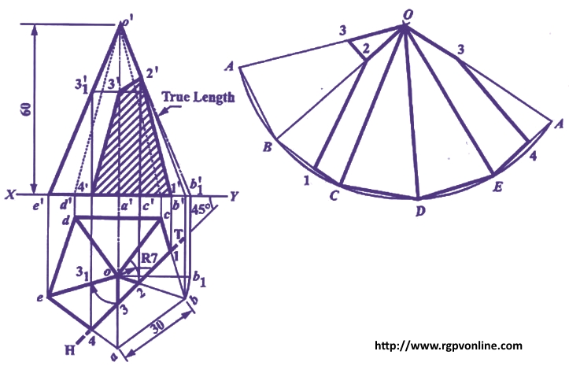

Que . 18 : A right regular pentagonal pyramid edge of base 30 mm and axis 60 mm long, has its base in HP such that base edge towards the VP is parallel to it. A section plane perpendicular to the HP and inclined at 45° to VP cuts the pyramid at a distance 7 mm from the axis. Draw its top view, sectional front view and development of lateral surface.
एक right regular pentagonal pyramid, base की भुजा 30 mm और axis 60 mm long, अपने base के सहारे HP पर रखा है और base की एक edge VP के parallel है। एक section plane, जो HP से लंबवत है और VP से 45° का कोण बनाते हुए, pyramid को axis पर 7 mm दूरी से काटता 1 Pyramid i top view, sectional front view site lateral surface का development draw कीजिए।
Answer :
(i) Draw top view of the pyramid as a regular pentagon of sides 30 mm with one of its base side say cd parallel to V.P. Project corresponding front view of the pyramid with its axis equal to 60 mm.
(ii) Draw H.T. of the section plane inclined at 45° to XY and intersecting the pyramid at a distance of 7 mm from the axis. Mark points 1 and 4 where section plane intersects the base edges bc and ae, respectively. Also mark points 2 and 3 where section plane cuts the edges ob and oa, respectively.

(iii) Project points 1, 2 and 4 as 1', 2' and 4' on corresponding edges in the front view. Point 3 cannot be project directly, so rotate 03 to intersect the edge ae at 31. Now project 31 as 3’1 on o'e' in front view. From 3’1, draw a horizontal line to intersect a'a' at 3'1. Join points 1' 2' 3' 4' and hatch the area to obtain the sectional front view.
(iv) Now to develop the lateral surface of the pyramid, we have to determine the true length of slant edges of the pyramid. For that rotate ob to ob1 so that it become parallel to XY project b1 as b’1 on XY and join a'b’1. Project points 2' and 3' on o'b’1 to determine their true distance from the apex.
(v) With centre and radius a'b1 draw an arc and step-off 5 divisions of 30 mm each. Draw lines joining the division points with each other and with the centre of the arc O. This is the development of the uncut pyramid.
(vi) In development, mark points 1 and 4 on base edges BC and EA respectively. On slant edges OB and OA mark points 2 and 3 respectively. Join points 1-2-3 and 3-4 to complete the required development.